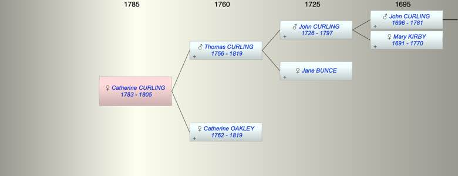

| [Index] |
| Catherine CURLING (1783 - 1805) |
|  |
| b. 23 Mar 1783 at St Nicholas at Wade |
| d. 1805 at Ham, Deal aged 22 |
| Parents: |
| Thomas CURLING (1756 - 1819) |
| Catherine OAKLEY (1762 - 1819) |
| Siblings (1): |
| Thomas Oakley CURLING (1781 - 1825) |
| Events in Catherine CURLING (1783 - 1805)'s life | |||||
| Date | Age | Event | Place | Notes | Src |
| 23 Mar 1783 | Catherine CURLING was born | St Nicholas at Wade | Note 1 | ||
| 1805 | 22 | Catherine CURLING died | Ham, Deal | buried 16 May 1805 Ham, Deal. | |
| Note 1: bap 23 Mar 1783 St Nicholas at Wade |
| Created on a Mac™ using iFamily for Mac™ on 8 Oct 2023 |